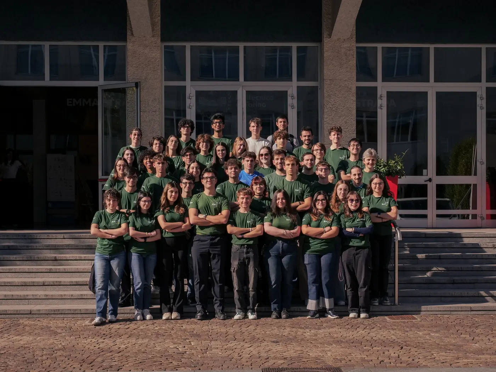
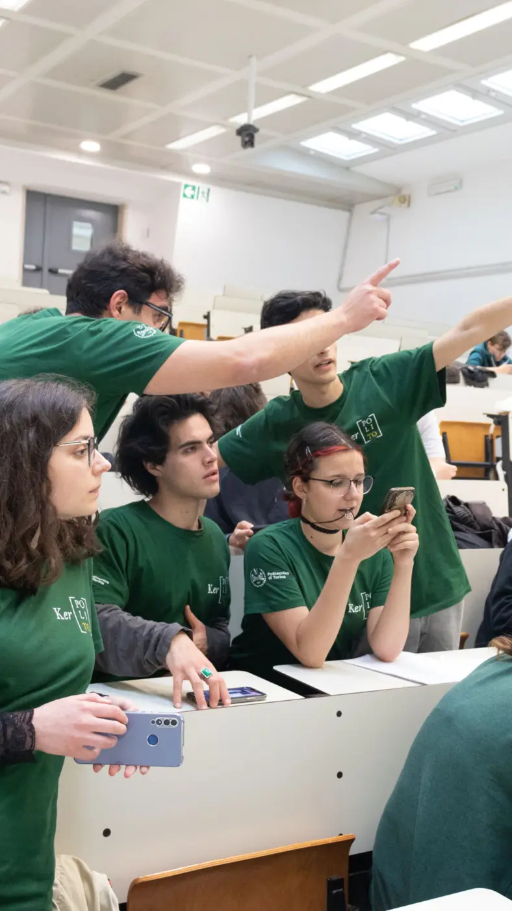
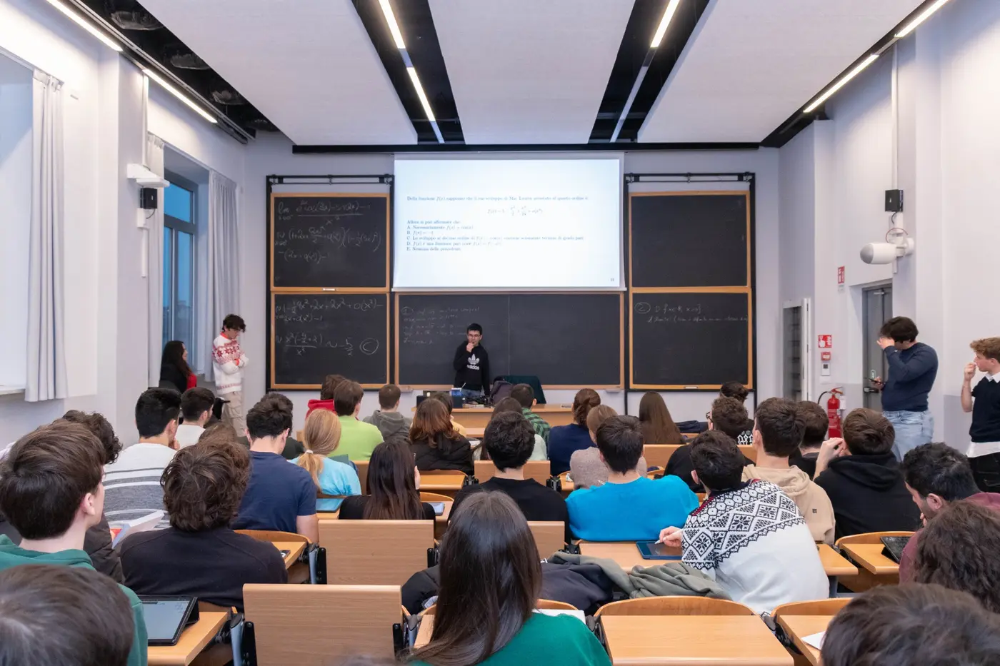
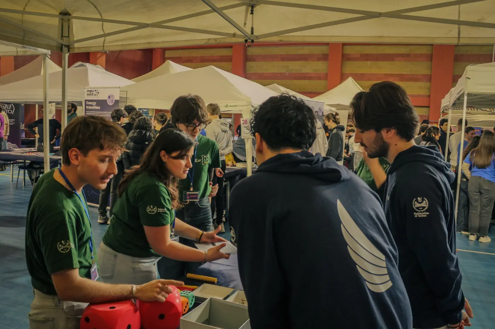
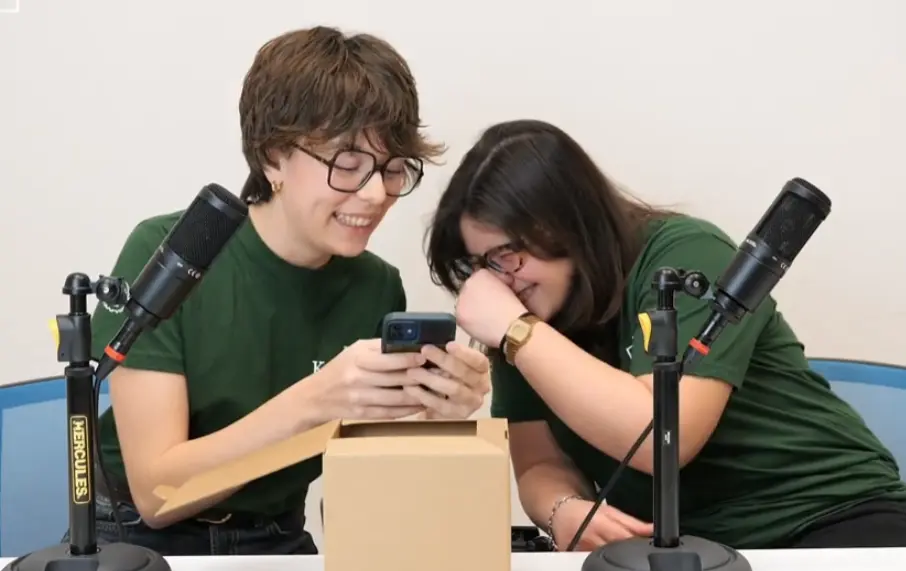
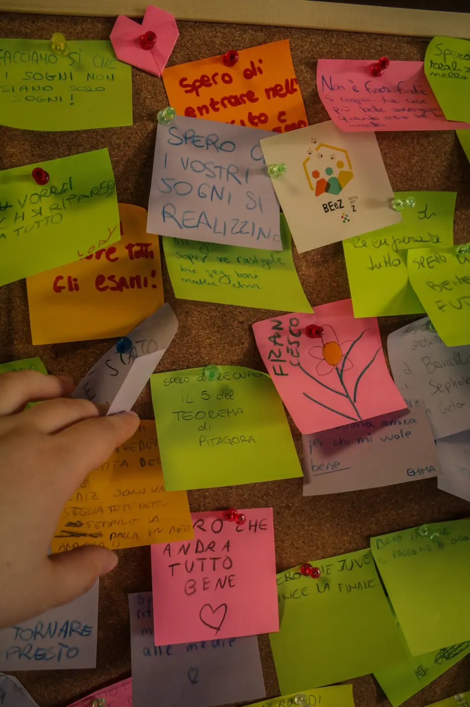

Video Maker
& Video Editor
Record and edit reels, podcasts, YouTube videos and TikToks
Filming · Video editing






Ker(PoliTo) is a student team at Politecnico di Torino focused on mathematics and outreach
We work on digital content, events, competitions, podcasts and research projects for people with different backgrounds
Our goal is to explain mathematical ideas without assuming that everyone starts with the same knowledge
Swipe or scroll to see every role
Record and edit reels, podcasts, YouTube videos and TikToks
Filming · Video editing
Create visuals for posts, campaigns and videos
Layout · Visual design
Plan content and manage conversations with our community and partners
Content planning · Community
Research mathematical topics and turn them into clear content
Research · Writing
Create diagrams and animations for our videos and posts
Motion · Diagrams
Work on the website and the Team's digital tools
Frontend · Digital tools
Plan events and coordinate the practical details
Planning · Logistics
Meet the Team and ask us about recruitment
Send the form before applications close
You do not need to study Mathematics to apply
Students, researchers and anyone interested in mathematical outreach can take part, including people outside Politecnico di Torino
Applications are reviewed and admission is not automatic
No, you do not need a Mathematics degree. What matters is an interest in the Team's work and in the role you choose
Not necessarily. Expectations depend on the role and on the recruitment cycle, so ask us at the Open Meeting if you are unsure
The time required depends on the role and on current projects. Ask us during the Open Meeting or on Instagram for details about this recruitment cycle
Yes, first-year students can apply. Applications are considered using the same recruitment process as for other candidates
This may change between recruitment cycles. Check the current application form or ask us at the Open Meeting before submitting
A group of Team members interviews candidates using criteria set before recruitment. The exact format and practical details are shared with candidates during each cycle
Yes, the Team is also open to students and researchers from other universities, as well as people interested in mathematical outreach
Yes, participation is voluntary. The amount of work depends on the role and on the projects active during the semester
Follow Ker(PoliTo)
Follow our channels to see what we publish and what the Team is working on